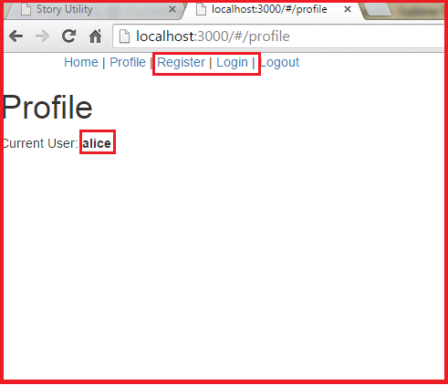

It will be very odd is someone has logged in but there are still links like "Login" and "Registeration". The even worse part is when click on these links after being logged in, the behavior of the app will be very weird. So in this experiment, I will hide the "Login" and "Registeration" links when user has logged in. After the user logout, the two links will resume.
Click HERE to the login page. Use alice as the username and password to login, we'll see that after logged in, the Login and Register links at the top disappears. Then try click on Logout link, we'll see that those two hided link appears.
Here is the screenshot that before I did this experiment, note that when the alice user has logged in, the Login and Register links are still there. 
In the HTML file, find the <a> tags for Login and Register,
add ng-hide to these tags and bind isLoggedin variable
to them.
<a href="#register" ng-hide='isLoggedin'>Register</a> <span ng-hide='isLoggedin'>|</span>
<a href="#login" ng-hide='isLoggedin'>Login</a> <span ng-hide='isLoggedin'>|</span>
Then in the app.js Javascript file, withn the checkLoggedin function,
set $rootScope.isLoggedin to true when there is a user logged in,
otherwise set it to false. This will hide the Login and Register links when a user logged in.
var checkLoggedin = function($q, $timeout, $http, $location, $rootScope)
{
var deferred = $q.defer();
$http.get('/loggedin').success(function(user)
{
$rootScope.errorMessage = null;
// User is Authenticated
if (user !== '0')
{
$rootScope.currentUser = user;
deferred.resolve();
// flag for ng-hide on "Login" and "Register" link
$rootScope.isLoggedin = true;
}
// User is Not Authenticated
else
{
$rootScope.errorMessage = 'You need to log in.';
deferred.reject();
$location.url('/login');
// flag for ng-hide on "Login" and "Register" link
$rootScope.isLoggedin = false;
}
});
Now in the logout() function, add $rootScope.isLoggedin = false;
at the end, this will bring back the two links when the user log out.
app.controller("NavCtrl", function($rootScope, $scope, $http, $location){
$scope.logout = function() {
$http.post('/logout')
.success(function(response){
$location.url('/home');
console.log("logged out! " + response);
// flag for ng-hide on "Login" and "Register" link
$rootScope.isLoggedin = false;
})
}
});
Prof. Jose's YouTube (1/2)
Prof. Jose's YouTube (2/2)
Passportjs.org